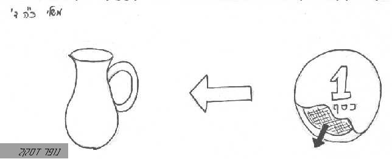

חומרים
אבָק
- = עפר הדק המתנשא מעל הארץ [שבי"ל]
- יש ה 24 / נופר דסקל
אבקה
אבקת רוכל
- = בשמים ששוחקים אותם הדק כאבק [שבי"ל]
אגֶל
אוּד
אזכרה
- = הקומץ העולה לגבוה, הוא זכרון המנחה, שבו נזכר בעליה לטובה ולנחת רוח, רש"י ויקרא ב [שבי"ל]
אֵפֶר
אֵש
- = א. תוצאה של חיבור בין חמצן לפחמימן; ב. סמל לחיבור בין רוחניות לחומריות, נקודת המפגש בין קודש לחול / מירה שטולמן -> כפית ה'תשס"ד קיץ
- [זכר ונקבה בפסוק אחד] / מוטי אהרוני -> האתר

- מכות מצרים - מבנה הפרשה / -> פו"ס מכות מצרים
- מש ל 15 / רפי
- אליהו - איש של אש ושל רוח / יהודה הולשטיין -> האתר
- קודש = יקוד אש / שד"ל -> פירוש שמות טו 11
בֹץ
בצֵק[ח]
- = עיסה, שהיא נפוחה [שבי"ל]
בֹרִית
- = דבר המנקה הבגדים, כמו נתר [שבי"ל]
- צפון, סבון / אביתר כהן
גומא
גחלים
גחלת
גֶלֶל
- = רעי [בעיקר בריבוי "גללים"] [שבי"ל]
גפרית
- = דבר השורף, ידוע [שבי"ל]
גִר
דומן
- = אשפה וזבל [שבי"ל]
דונג
- = שעוה [שבי"ל]
דְיוֹ
- = מי שחור לכתיבה [שבי"ל]
- ירמיהו - בכתב ובעל-פה / ע"פ הרב אליהו בן אמוזג -> מבוא לתורה שבעל-פה
דֶמַע
- = "ודמעך" = רמז לתירוש ויצהר, שהיין והשמן ברדתם טיפות ידמה אל הדמעה [שבי"ל]
דֶשֶן2
זִיק
- = רק ברבים "זיקות" [שבי"ל]
זכוכית
- = מין אבן יקרה, בהירה ונקיה [שבי"ל]
- = חומר זך ושקוף שיצרו מחוֹל, שימש לחלונות וגם לתכשיטים יקרים / אביתר כהן
זִרמָה
- = שטיפת זרע [שבי"ל]
- [באה רק בספר יחזקאל] / מוטי אהרוני (MOTI_AHARONI @ WALLA.CO.IL) -> האתר
חוֹל

חלאה
- = זוהמא על-ידי רתיחת הקדרה [שבי"ל]
- [באה רק בספר יחזקאל] / מוטי אהרוני (MOTI_AHARONI @ WALLA.CO.IL) -> האתר
חרֶשׂ
חרשׂת
יָוֵן
- = רפש וטיט עב [שבי"ל]
- [באה רק בספר תהלים] / מוטי אהרוני -> האתר
יצהר
- = שמן זית הטוב, שמדליקין בנר שיצהיר ויאיר [שבי"ל]
כְפוֹר2
כֹפֶר1[ח]
- = מין זפת [שבי"ל]
לַהַב
להבה
מדמנה
- = חומר וטיט [שבי"ל]
מיִם

- אל תנסו לקרוא מחשבות / אראל
- בועז נותן לרות לחם ומים / יהודה איזנברג -> "מכלול", התש"ס, גליון כ'
- מה זה רקיע? ואיפה נמצאים המים אשר מעל השמיים? / מחברים שונים -> "עצור כאן חושבים"
- מים באפיקים בנגב / יוסף ברסלבי -> הידעת את הארץ
- מאכלים מדבריים שנזכרו בתנ"ך: מן, שלו, עוגה, תמר, מלוח, מקורות מים / אבינועם דנין
- מים נקיים = בריאות / אראל
- מנהג ניסוך המים / אראל
מים עמוקים
מימי רגליים
מִכְלוֹת זהב
- = מזוקק וצרוף לתכליתו ושלמותו, רש"י דה"ב ד21 [שבי"ל]
מֶלַח
- = שם קיבוצי [שבי"ל]
- ים המלח / שדים / ערבה / קדמוני (הסבר לשמות) / אביתר כהן
ממרורים
מרורים
- = סמים מרים [שבי"ל]
- טעם אכילת מרורים עם קרבן הפסח / אראל
ניצוץ
- = זיק אש [שבי"ל]
נעורת
- = פסולת המנוער מן הפשתים [שבי"ל]
נתֶר
- = חומר ששימש לכביסה (אולי - סודה לשתיה) / אראל
- = דבר המסיר הכתם ממקומו, כמו בורית [שבי"ל]
- צפון, סבון / אביתר כהן
סִיג
- = פסולת המעורב בתוך הכסף [שבי"ל]
- 
עפָר
- = שם קיבוצי [שבי"ל]
- עפר במכות מצרים / -> פו"ס מכות מצרים
עשֶן
עשָן
- = היוצא מן האש, והושאל לחמימות היוצא מן האף לעניין כעס [שבי"ל]
- החומץ והעשן / ע"פ מלבי"ם -> פו"ס 10
פחים
פחָם
פִיח
- = אבק כבשן, הנישב ברוח [שבי"ל]
- [באה רק בספר שמות] / מוטי אהרוני (MOTI_AHARONI @ WALLA.CO.IL) -> האתר
פיח כבשן
פרֶש
צֵא
- = ל' לשון טינוף, מסרה. והוא היוצא מן האדם [שבי"ל]
צֵאָה
צוֹאָה
צמֶר

צפיעים
- = גללי בקר [שבי"ל]
קֻבַּעַת
קיטור
- = תימור של עשן וענן [שבי"ל]
קמַח
- = דגן הנטחן [שבי"ל]
קֶרַח
רִיר
רפֶש
- = נרדף לטיט [שבי"ל]
רצפה2
רצפים
רֹק
- = דבר הרקוק [שבי"ל]
שבבים
שביב
- = להב [שבי"ל]
שַחַק[ח]
- = אבק דק [שבי"ל]
שלהבת
שֶמֶן
- = משקה היצא מן הזיתים [שבי"ל]
- איך (לא) לבחור שותפים לדירה / אראל
- שמו של חודש מרחשון / אביתר כהן -> האתר
שמרים

{kind=link}
{kind=link}
{kind=link}
{kind=link}
שנהַב
שעטנֵז
- = עירוב צמר ופשתים [שבי"ל]
שֵש[ח]
תימרות
תימרות עשן
- = עמודי עשן העולים בשוה כתמר [שבי"ל]